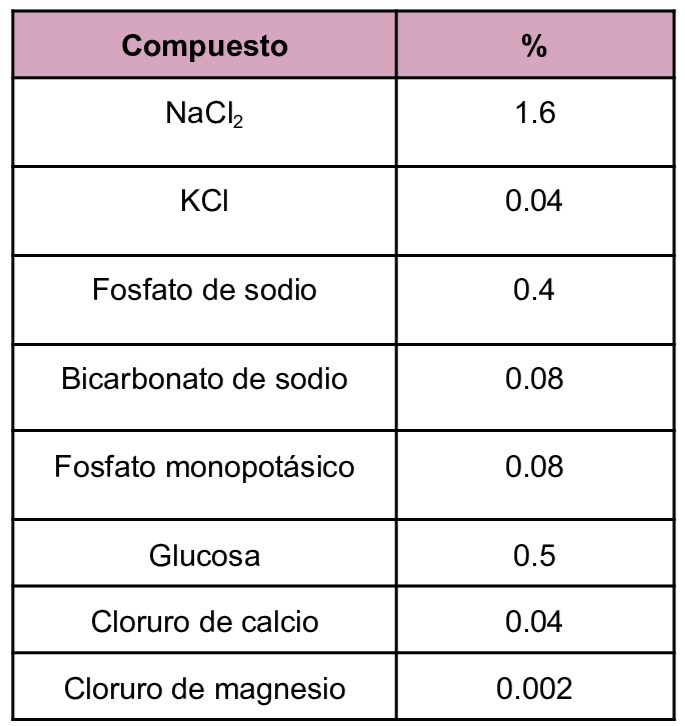

Medio de Boeck-Drbohlav modificado es bifásico con una fase sólida de huevo/sangre y una fase líquida comúnmente la solución de Locke con almidón de arroz como aditivo común, utilizado en el mantenimiento de protozoarios intestinales tales como Entamoeba histolytica y Blastocystis spp.
Composición
Composición de Solución de Locke

Se suplementa con Suero
pH a 25°C 7.2±0.2
Composición de Fase Sólida
La fase sólida se prepara mezclando huevo con sangre humana desfibrinada y se adiciona solución de Ringer
Referencias
Barrios,E. & Et.Al. (2013) Mantenimiento y transporte del Blastocystis sp. en condiciones de vitalidad. https://servicio.bc.uc.edu.ve/fcs/vol17sp/art04.pdf
Clark, C. & Diamond, L. (2002) Methods for Cultivation of Luminal Parasitic Protists of Clinical Importance. https://pmc.ncbi.nlm.nih.gov/articles/PMC118080/